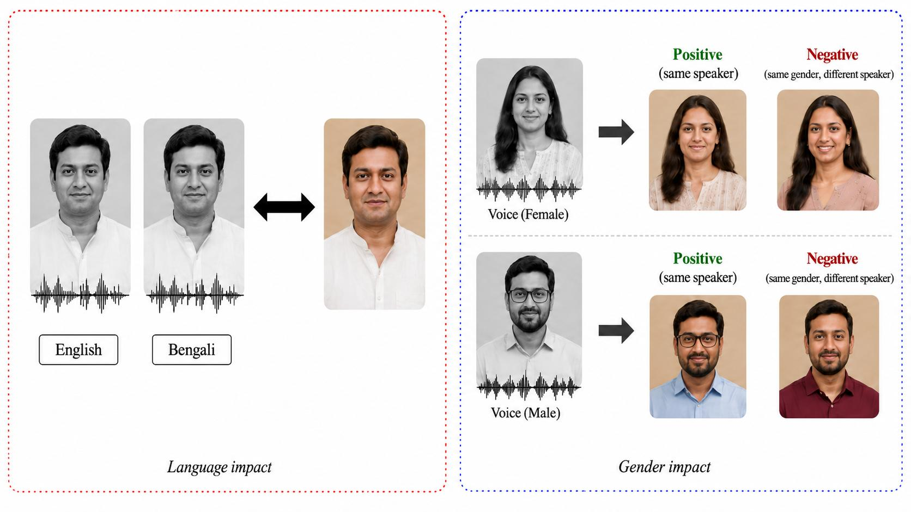
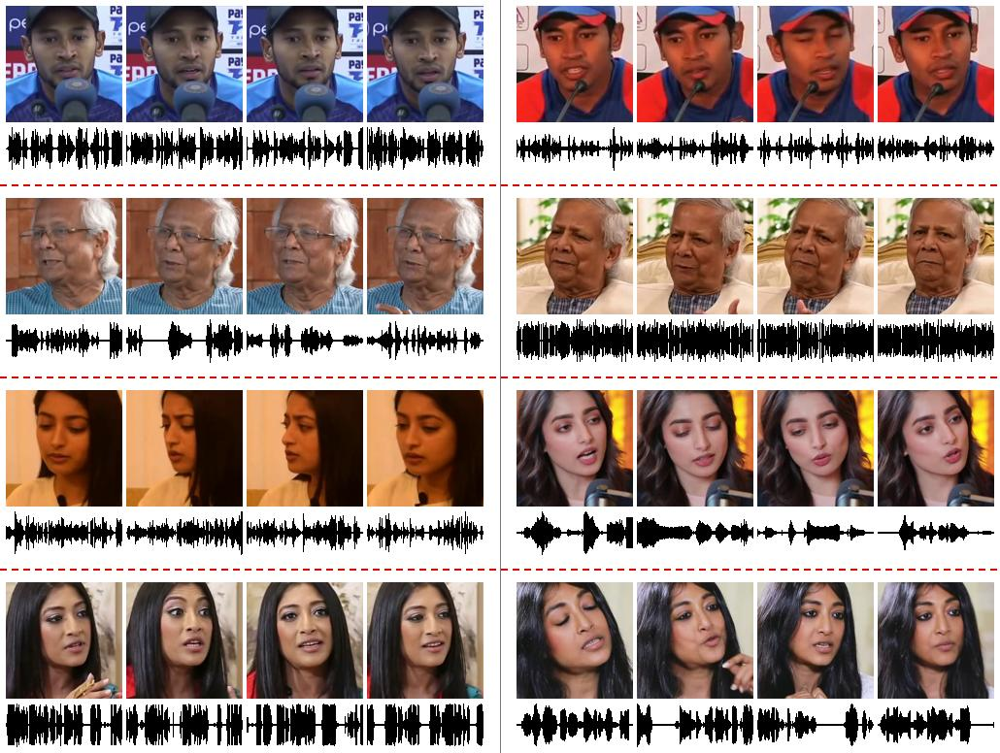
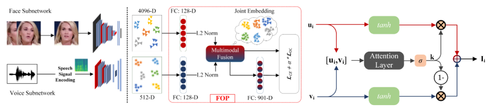
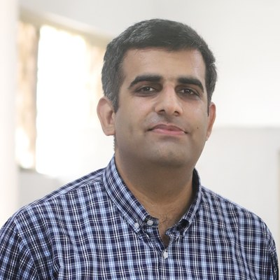

The face and voice of a person have distinctive characteristics and are widely used as biometric cues
for person authentication, either independently or jointly in multimodal systems. The strong perceptual
correspondence humans establish between faces and voices has motivated a large body of work on automated
face-voice association. Most of these approaches, however, are evaluated under controlled experimental
settings that neglect the varying conditions of real-world scenarios. Two important sources of this
variation are the language spoken by the speakers and the distribution of demographic traits across
speakers. Since a substantial proportion of the global population is bilingual or multilingual, it
matters whether face-voice association models remain reliable when the same speaker communicates in
different languages. At the same time, gender-controlled evaluation is necessary to determine whether
models rely on speaker-specific cross-modal cues rather than simply exploiting demographic differences
between the speakers forming the positive and negative pairs.
The goal of the Face-voice Association across LAnguages and Gender (FLAG) 2027 Challenge is
therefore two-fold: to evaluate face-voice association methods in multilingual conditions while
preventing models from using gender as a proxy for identity, and to foster the development of
multilingual and gender-aware methods that learn identity-specific associations. FLAG 2027 builds on
the prior FAME 2026 and
FAME 2024 Grand Challenges hosted at IEEE ICASSP and ACM
Multimedia, and has been accepted for support under the
IEEE
Signal Processing Society Challenge Program.
TIMELINE
Tentative — dates may be updated.
-
Teams register for the challenge via the registration form.
+ Add to Google Calendar -
Training and development sets, pre-extracted features and the baseline model are available. Teams compare results on the CodaBench leaderboard — up to 150 submissions, at most 15 per day.
+ Add to Google Calendar -
Evaluation inputs are released on the first day, without ground-truth labels. The total number of submissions is limited to 15.
+ Add to Google Calendar -
Final rankings are announced, based on the overall score (sum of the four EERs divided by 4).
+ Add to Google Calendar -
Teams submit a 2-page system description in the ICASSP template, together with a link to a working version of their code. Teams without a system description will be disqualified.
+ Add to Google Calendar -
Deadline for challenge paper submission.
+ Add to Google Calendar
EVALUATION TRACKS
Language impact
Face-voice association is established through a cross-modal verification task: given a face and a voice, the system decides whether both belong to the same identity. The dataset is split following the unseen-unheard configuration, in which train and test splits consist of disjoint speakers. Each video shows a speaker using one language only, while every speaker appears in videos of at least two distinct languages. Evaluation is carried out on both a heard language, available during training, and an unheard language, not available during training. This track measures whether a voice recorded in a different language can still be associated with the corresponding speaker's face.
Gender impact
This track evaluates gender-controlled verification. Negative samples are restricted to speakers of the same gender as the speaker of the positive sample, so a model can no longer infer identity from demographic differences alone. This yields a more rigorous assessment of whether models learn genuinely identity-specific face-voice associations rather than using gender as a shortcut.

Figure 1: Overview of the FLAG 2027 Challenge. The "language impact" track focuses on whether a voice recorded in different languages can be correctly associated with the corresponding speaker's face. The "gender impact" track evaluates gender-controlled verification, where negative samples are restricted to speakers of the same gender as the positive sample speaker.
DATASET
Building on the prior FAME 2024 and 2026 Grand Challenges, we extended the MAV-Celeb dataset with one additional language, curating a new split of 100 English-Bengali speakers (MAV-Celeb v4). The new split provides both language and gender annotations, which is what makes the two FLAG tracks possible. Alongside it, the earlier splits remain available: MAV-Celeb v1 covers English and Urdu speakers, and v3 covers English and German speakers, each with distinct (non-overlapping) speaker identities.
As in previous releases, the audio-visual samples are obtained from YouTube videos of celebrities appearing in interviews, talk shows, and television debates. The visual data spans a vast range of setups, including different poses, motion blur, background clutter, video quality, occlusions and lighting conditions. Because the videos originate from real-world situations, they reproduce the same difficulties encountered when deploying face-voice association tools in practice: noise, background chatter or music, overlapping voices, and compression artifacts.
Each speaker appears in more than one video, for a total of 557 videos. Face-voice pairs are curated by sampling one video frame per second of active speaker, paired with the corresponding audio segment. Table 1 summarizes the dataset characteristics.
| Dataset | Bengali | English |
|---|---|---|
| # of celebrities | 100 | 100 |
| # of male celebrities | 57 | 57 |
| # of female celebrities | 43 | 43 |
| # of videos | 301 | 256 |
| # of hours | 41.6 | 29.9 |
| # of utterances | 32,341 | 22,823 |
| Avg. # of videos per celebrity | 3.0 | 2.6 |
| Avg. # of utterances per celebrity | 323.4 | 228.2 |
| Avg. length of utterances (in s) | 4.6 | 4.7 |
Table 1: Summary of the dataset characteristics.
The training and development sets are shared with participants on the first day of the progress phase. The input data for the final evaluation phase is released on the first day of the evaluation phase, without ground-truth labels, so that the final evaluation tests the generalization capability of models developed during the progress phase.

Figure 2: Audio-visual samples selected from the dataset. The visual data contains variations such as pose, lighting condition, and motion. The left part shows celebrities speaking English; the right block presents data of the same celebrity in Bengali.
The download folder contains the training and development sets, including both the raw data files and the corresponding pre-extracted audio-visual features. The meta file for the training set with gender details can be downloaded separately.
- MAV-Celeb v4 (English-Bengali, FLAG 2027)
- Download folder (training & development sets, raw files and pre-extracted features): Google Drive
- Meta file for the training set with gender details: Google Drive
The download folder is organized as follows:
Training set
train_set/
├── features/
│ ├── faces/
│ │ └── train_English_faces.csv # 6,485 rows × 4,097 cols (4,096-d face embedding + class label)
│ └── voices/
│ └── train_English_voices.csv # 6,485 rows × 193 cols (192-d voice embedding + class label)
└── train_set/
├── train_English.txt # 6,485 lines, file list with labels
├── faces/
│ └── English/
│ ├── id001/
│ │ ├── 00036.jpg
│ │ ├── 00056.jpg
│ │ └── ...
│ ├── id002/
│ └── ... id070/ # 70 identities, 6,485 .jpg total
└── voices/
└── English/
├── id001/
│ ├── 00036.wav
│ ├── 00056.wav
│ └── ...
├── id002/
└── ... id070/ # 70 identities, 6,485 .wav total
Development set
dev_set/
├── gender/
│ ├── English_test.txt # 982 lines
│ ├── Bangla_test.txt # 1,468 lines
│ ├── features/
│ │ ├── English_test_faces.csv # 982 × 4,096
│ │ ├── English_test_voices.csv # 982 × 192
│ │ ├── Bangla_test_faces.csv # 1,468 × 4,096
│ │ └── Bangla_test_voices.csv # 1,468 × 192
│ ├── English_test/
│ │ ├── faces/ 00000.jpg ... (982 files)
│ │ └── voices/ 00000.wav ... (982 files)
│ └── Bangla_test/
│ ├── faces/ 00000.jpg ... (1,468 files)
│ └── voices/ 00000.wav ... (1,468 files)
└── no_gender/
├── English_test.txt # 1,008 lines
├── Bangla_test.txt # 1,406 lines
├── features/
│ ├── English_test_faces.csv # 1,008 × 4,096
│ ├── English_test_voices.csv # 1,008 × 192
│ ├── Bangla_test_faces.csv # 1,406 × 4,096
│ └── Bangla_test_voices.csv # 1,406 × 192
├── English_test/
│ ├── faces/ 00000.jpg ... (1,008 files)
│ └── voices/ 00000.wav ... (1,008 files)
└── Bangla_test/
├── faces/ 00000.jpg ... (1,406 files)
└── voices/ 00000.wav ... (1,406 files)
BASELINE MODEL & STARTER KIT
To allow participants to benchmark their results, we release a pretrained instance of a competitive
multimodal method for the face-voice association task, together with a leaderboard on CodaBench where
teams can compare their performance during the progress phase. The model is a two-branch network taking
face and voice embeddings as input (see Fig. 3). Face embeddings are obtained with a popular
convolutional network pretrained on a large-scale facial recognition dataset; voice embeddings are
obtained with an audio encoding network for speaker recognition, trained on the language available in
the training set (i.e. the heard language). The multimodal model then combines the face and voice
embeddings and is optimized with a loss function that imposes orthogonality constraints on the
multimodal embeddings of different speakers.
Link to the paper:
Fusion and Orthogonal Projection for Improved Face-Voice Association
Link to the Paper's code:
https://github.com/msaadsaeed/FOP
Link to the Baseline code:
https://github.com/mavceleb/mavceleb_baseline
Link to the FLAG 2027 repository:
https://github.com/SwapnilKhandoker101/FLAG_2027

Figure 3: Diagram showing the baseline methodology.
Baseline results. Table 2 reports the baseline face-voice association results (EER, %) in the standard and gender-constrained settings, for the heard (English) and unheard (Bengali) languages.
| Method | Phase | Config. | Standard Eng. test | Standard Bengali test | Gender-Constrained Eng. test | Gender-Constrained Bengali test | Overall Score |
|---|---|---|---|---|---|---|---|
| FOP | Dev | Eng. train | 32.54 | 38.12 | 32.99 | 44.01 | 36.92 |
| FOP | Eval | Eng. train | 29.10 | 32.90 | 39.40 | 39.90 | 35.32 |
Table 2: Cross-modal verification between face and voice across the test configurations of the MAV-Celeb v4 dataset.
EVALUATION METRICS
As commonly done for face-voice association tasks, submissions are evaluated with the
Equal Error Rate (EER): the value at which the false acceptance rate (FAR) and the false
rejection rate (FRR) are equal. As for FAR and FRR, a low EER indicates good performance. Participants
submit a .txt file containing output scores for every pair in the test set, indicating the
system's confidence that the face and voice belong to the same person. Within a submission file, a pair
with a higher score is interpreted as one the model is more confident about.
This setup is consistent with the evaluation of the earlier FAME 2024 and FAME 2026 Grand Challenges. Technically, EER does not require confidence scores of different models to span the same range, and it does not depend on a fixed threshold, unlike metrics such as precision or accuracy. In real deployments a system developer would tune that threshold to their own needs — a high threshold gives a low FAR and a high FRR — which is precisely why a threshold-independent metric is the fairer basis for comparing systems.
Since models are evaluated on four different tasks (English heard and Bengali unheard, each in the standard and gender-constrained settings), each model yields four EERs. The overall score used to decide the challenge winners is computed as:
Overall Score = (Sum of all EERs) / 4
SUBMISSION
Alongside the audio (.wav) and image (.jpg) files, the dataset includes
.txt files of the face-voice test pairs, where each line has the following format:
- ljAnhn41 English_test/voices/00000.wav English_test/faces/00000.jpg
- neHzLCeC English_test/voices/00001.wav English_test/faces/00001.jpg
Participants are expected to compute and submit text files including the ID and the confidence score, in the following format:
- ljAnhn41 1.162691
- neHzLCeC 1.235319
Submission Format: Participants must submit a ZIP archive containing one score file per protocol
cell, placed in two folders named after the tracks. To create the archive, run
zip -r submission.zip no_gender gender from within the directory holding the two folders.
The expected layout is:
- no_gender/sub_score_v4_English_heard.txt
- no_gender/sub_score_v4_Bangla_unheard.txt
- gender/sub_score_v4_English_heard.txt
- gender/sub_score_v4_Bangla_unheard.txt
In the progress phase, each team may make a maximum of 150 submissions, with at most 15 per day. In the evaluation phase, the total number of submissions is limited to 15.
Submission Platform: Participants will submit their predictions through the CodaBench platform,
where their performance will be automatically evaluated and scored.
CodaBench: https://www.codabench.org/competitions/18062/
RULES FOR SYSTEM DEVELOPMENT
Since FLAG 2027 aims at analyzing whether face-voice association capabilities translate across language and gender constraints, the following rules apply:
- A pretrained encoder for faces or voices is allowed.
- Participants are required to submit a 2-page system description in the ICASSP template to the challenge organizers. Teams without a system description will be disqualified from the challenge. Teams describing a setup that violates one of these rules will be disqualified.
- Participants are required to submit a link to a working version of their setup, e.g. on a platform for open-source development such as GitHub. Teams without a code submission, or with a setup that violates one of these rules, will be disqualified.
Research ethics and responsible use
Participants agree to the following:
- Research use only. Use the data only for research within this challenge. Don't use it for commercial purposes, surveillance or identifying people in the real world.
- No redistribution. Don't share, publish or re-host the raw data or the pre-extracted features. Anyone who wants the data should get it through the official challenge channels.
- Respect for privacy. Don't try to find extra personal information about the people in the dataset, and don't link them to other data sources.
- Fairness. Teams are encouraged to report how their systems perform across languages and genders, and to discuss the limitations and possible biases of their approach in their system description.
- Honest reporting. Results must come from your own models without manual labelling of the test data. Any use of extra data or pretrained models must be declared in the system description.
Teams that break these rules will be disqualified.
REGISTRATION
Participation in the FLAG 2027 Challenge is open to teams from academia and industry, and there is no registration fee. One team member registers on behalf of the whole team using the form below. Registration closes on 15 October 2026.
Submit the registration form with your team name, affiliation and the contact details of the corresponding member.
Download the training and development sets, the pre-extracted features and the baseline, and create an account on CodaBench.
Upload your score files to CodaBench during the progress and evaluation phases, then send a 2-page system description and a link to your code.
Questions about the challenge, the data or the submission process are welcome at mavceleb@gmail.com.
PRIZES
The FLAG 2027 Challenge has been accepted for support under the IEEE Signal Processing Society Challenge Program. The prize pool is distributed among the top five ranked teams.
ORGANIZERS
Institute of Computational Perception, Johannes Kepler University Linz, Austria
Swapnil Khandoker
Institute of Computational Perception, Johannes Kepler University Linz, Austria
University of Michigan, USA
Institute of Computational Perception, Johannes Kepler University Linz, Austria
Fatima Noor
University of Engineering and Technology Taxila, Pakistan
Fortemedia Singapore, Singapore
Mubashir Noman
Mohamed bin Zayed University of Artificial Intelligence, United Arab Emirates

Junaid Mir
University of Engineering and Technology Taxila, Pakistan
University of Engineering and Technology Taxila, Pakistan
University of Michigan, USA
Institute of Computational Perception, Johannes Kepler University Linz, Austria | Linz Institute of Technology, Austria